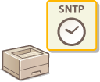
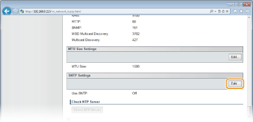
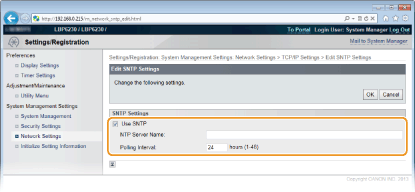
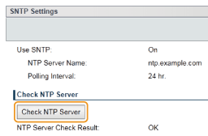

Configuring SNTP
|
 |
Simple Network Time Protocol (SNTP) enables you to adjust the system clock by using a time server on the network. When you use SNTP, the system checks the timer server periodically, so that the system clock is always accurate. The time is based on Coordinated Universal Time (UTC), so specify the time zone setting before configuring SNTP (Timer Settings).
|
|
|
|
The SNTP of the machine supports both NTP (version 3) and SNTP (versions 3 and 4) servers.
|
1
Start the Remote UI and log on in System Manager Mode. Starting the Remote UI
2
Click [Settings/Registration].

3
Click [Network Settings]  [TCP/IP Settings].
[TCP/IP Settings].

4
Click [Edit] in [SNTP Settings].

5
Select the [Use SNTP] check box and enter the required information.

[Use SNTP]
Select the check box to use SNTP for synchronization. Clear the check box if you do not want to use this function.
Select the check box to use SNTP for synchronization. Clear the check box if you do not want to use this function.
[NTP Server Name]
Enter the IP address of the NTP or SNTP server. If a DNS server is available on the network, you can enter "<host name>.<domain name>" (FQDN) of up to 255 alphanumeric characters instead (example: "ntp.example.com").
Enter the IP address of the NTP or SNTP server. If a DNS server is available on the network, you can enter "<host name>.<domain name>" (FQDN) of up to 255 alphanumeric characters instead (example: "ntp.example.com").
[Polling Interval]
Enter an interval from 1 to 48 hours to specify how often to poll the time server.
Enter an interval from 1 to 48 hours to specify how often to poll the time server.
6
Click [OK].
|
|
Testing communication with the NTP/SNTP serverYou can test whether the machine is communicating with the registered time server. Click [Settings/Registration]
 |
|
You can notify the machine of the time set on your computer, and synchronize to that time. Make time notification settings in the Printer Status Window.

|
 in the system tray.
in the system tray.